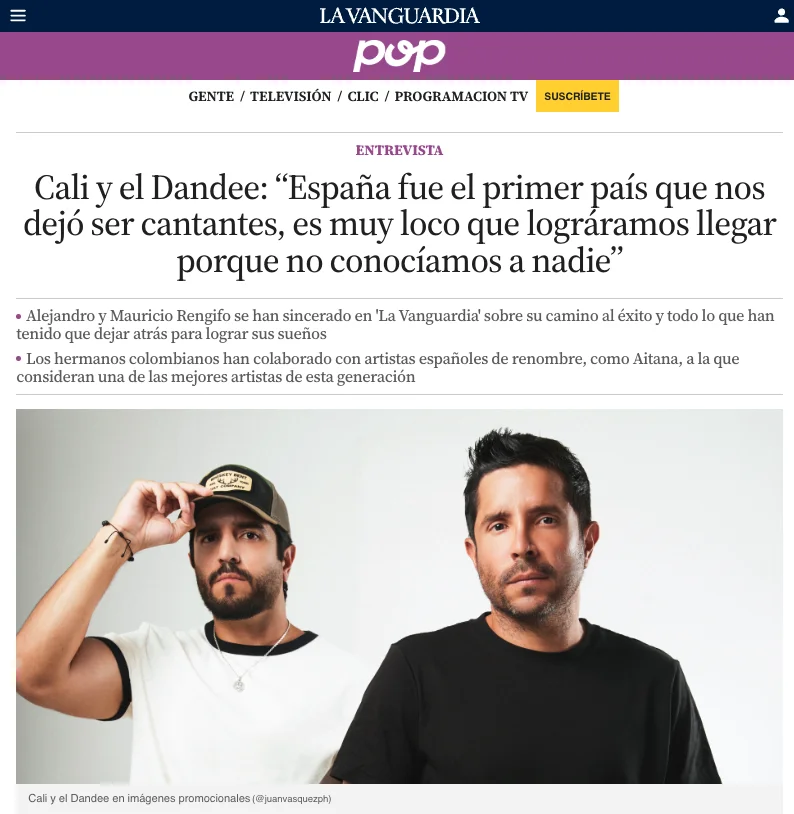
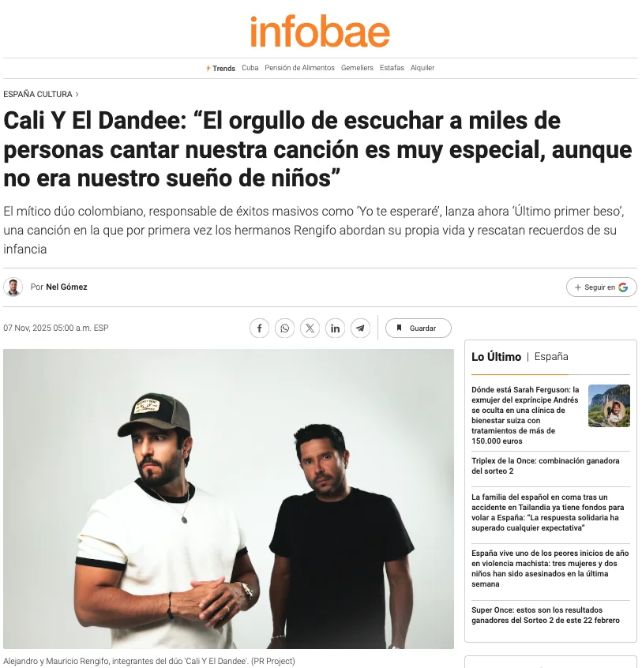
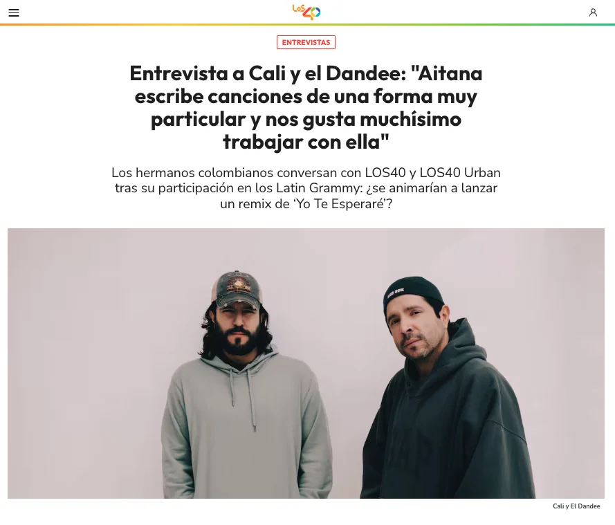
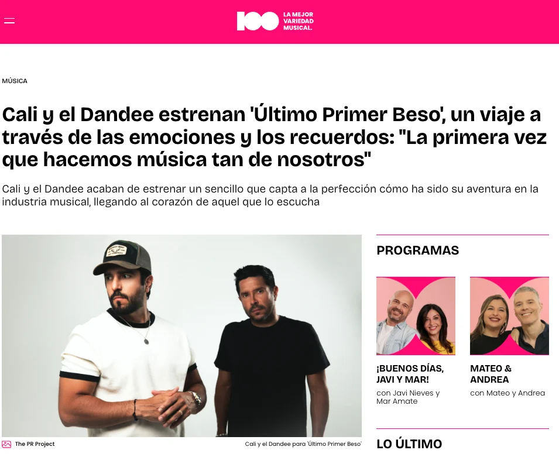

Campañas PR: “Dejavú Tour 2024” + “Todavía No” y “Último Primer Beso” (2025)
Objetivo: Desarrollar una campaña de relaciones públicas no tradicional, enfocada en audiencias jóvenes (Generación Z), combinando PR con creadores de contenido, podcasts y medios especializados en música urbana.
Contexto: “Dejavú Tour” (circuito de festivales) + lanzamiento de nueva música.
Objetivo: PR no tradicional para audiencias jóvenes (Gen Z), combinando medios, podcasts y creadores de contenido.
Resultados: +70 impactos en medios nacionales, locales, internacionales, especializados, latinos y digitales.
Entrevistas virtuales previas a fechas del tour con medios objetivos tradicionales y digitales, organización de junkets de prensa, gestión de espacios en medios digitales de música urbana y presencia en podcasts culturales y de entretenimiento con audiencia joven.


Activaciones con perfiles digitales alineados con la audiencia Gen Z, conectando música, cultura digital y entretenimiento para generar impactos orgánicos y conversación.
Podcast: Vaya Vaina

Podcast: Animales Humanos

Algunos impactos de medios:
Objetivo: Acompañar el lanzamiento de un single íntimo e introspectivo, construyendo una narrativa que reflejara su evolución artística y emocional.
Toda la campaña fue virtual. Buscamos que los medios se involucraran de forma genuina en el universo de la canción sin presencialidad, generando cobertura con profundidad narrativa y reforzando su posicionamiento en España.
Encuentro exclusivo con 7 medios especializados, guiado por los artistas. Compartieron el trasfondo personal del single y conversaron con periodistas para facilitar contenidos más profundos y narrativos.


Desarrollo de ángulo noticioso y nota de prensa, envío a medios, seguimiento activo de cobertura y coordinación de entrevistas virtuales con medios objetivos en España.
Resultados: +39 impactos en medios nacionales, locales, especializados, latinos y digitales.
Algunos impactos:




¿Quieres una campaña así para tu proyecto? Conoce nuestros servicios de PR y comunicación.